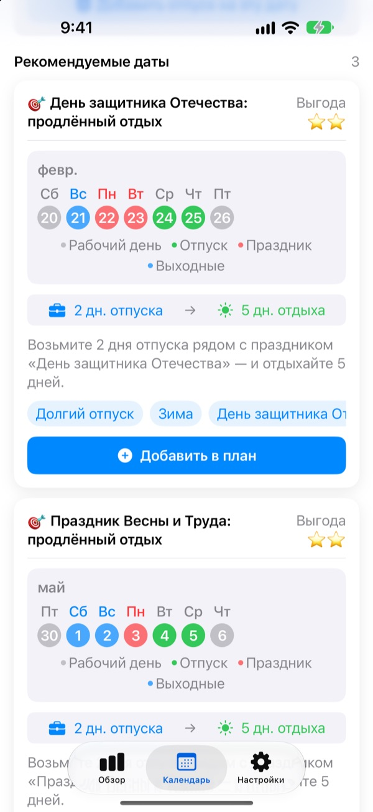
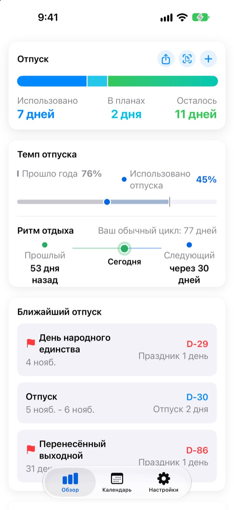
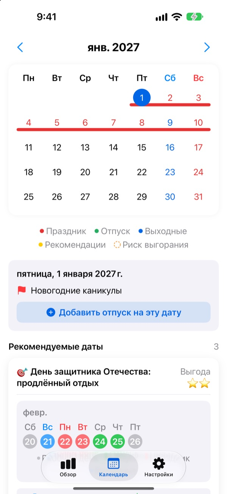
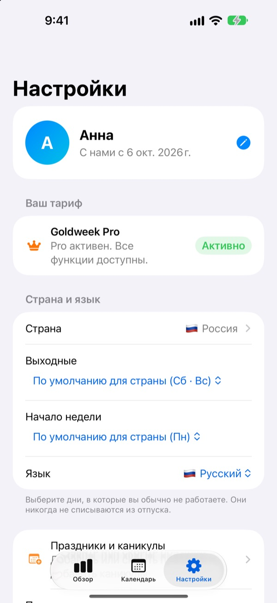

Мало дней отпуска,
долгий отдых
Goldweek совмещает праздники с выходными и точно показывает, в какие дни взять отпуск, чтобы отдыхать как можно дольше. Больше не нужно листать календарь и считать.
Скачать можно бесплатно. Учёт отпуска и рекомендации остаются бесплатными.

Насколько хватит вашего отпуска?
Выберите, сколько дней отпуска вы можете взять. Покажем самый долгий отдых, который они дают вокруг ближайших праздников.
Устали считать дни по календарю?
Четверг праздничный, брать ли пятницу? Или сберечь день для длинных выходных в следующем месяце? Пролистав календарь, в итоге берёшь какой попало день, а к декабрю неиспользованный отпуск просто сгорает. Goldweek считает за вас и показывает дни, с которыми отпуска хватает надольше всего.
Весь отпуск на одном экране
Сколько положено, сколько использовано, сколько осталось. Рядом видно, какая часть года прошла и сколько отпуска уже потрачено, так что сразу понятно, не копите ли вы слишком много.
Остаток отпуска и ближайшие выходные видны в виджете на экране «Домой».

Отмечайте отпуск прямо в календаре
Праздники, отпуск и рекомендованные дни отмечены в календаре разными цветами. Нажмите на дату, чтобы добавить или изменить отпуск, в том числе половину дня, четверть дня или часы.
А прошлые отпуска можно сразу перенести с фото экрана из отдела кадров.

Ваша страна, ваш график
Праздники 42 стран: Россия, Европа, Азия, Америка и не только. Где праздники зависят от региона, выберите свой. Вашей страны нет? Добавьте праздники сами.
Также можно выбрать выходные дни недели, первый день недели и график: постоянный, неполный день или сменный.

Начать можно в три шага
- 1
Укажите, где работаете
При первом запуске выберите страну и сколько дней отпуска у вас в году.
- 2
Выберите рекомендацию
Во вкладке «Календарь» есть рекомендованный отдых. Добавьте то, что нравится.
- 3
Отмечайте отпуск
Нажмите на дату или перенесите прошлые отпуска с фото.
Как считается
- Целый день
- 1 день из остатка
- Половина дня
- 0,5 дня
- Четверть дня
- 0,25 дня
- Часы
- По вашим рабочим часам в этот день
- Больничный, отгул по закону, командировка
- Не вычитаются из отпуска
- Бонусные дни
- Дополнительные дни вроде отгулов за переработку, учитываются отдельно со сроком действия (Pro)
Число дней отпуска в году и месяц, с которого начинается ваш отпускной год, можно поменять в настройках в любой момент.
Хорошо отдыхать бесплатно. Планирование берут на себя Plus и Pro.
Бесплатно
- Целые дни, половины, четверти и часы, а также остаток отпуска
- Праздники 42 стран, свои праздники и каникулы
- Все рекомендации на этот год, до 3 в план
- Подсказки о перерывах, напоминания и виджет
- Добавить отпуск по фото
- Резервная копия в iCloud и общий с семьёй график
Plus и Pro
- Plus: Оптимальный план на год
- Plus: Рекомендации без ограничений, включая прошлый и следующий год
- Plus: Перенос отпуска в приложение «Календарь»
- Pro: Всё из Plus, бонусные дни, годовые лимиты и перенос по типам
- Pro: Импорт школьного календаря и автоопределение календаря
- Pro: Совместный отдых и семейные даты
Каждый уровень доступен как годовая подписка или разовая покупка навсегда.
Годовая подписка продлевается автоматически, если её не отключить минимум за 24 часа до конца периода. Управлять можно в любое время: Настройки > Аккаунт Apple > Подписки.
Частые вопросы
Остаток отпуска считается неправильно.
Проверьте в настройках месяц начала отпускного года и общее число дней. Половины дня (0,5) и четверти (0,25) вычитаются автоматически, а типы, которые не идут в счёт отпуска, например больничный, отгул по закону или командировка, остаток не меняют. Если всё равно не сходится, напишите нам.
Отпуск не отображается в календаре.
Отменённый отпуск в календаре не показывается. Проверьте статус записи в разделе «Учёт отпусков». Иногда помогает и обновление до последней версии.
Как добавить бонусные дни?
Нажмите + во вкладке «Обзор», чтобы открыть «Учёт отпусков», и внизу воспользуйтесь разделом «Бонусные дни». Выберите тип (отгул за переработку, поощрение, восстановительный отпуск и т. п.), укажите число дней и, если нужно, срок действия. Бонусные дни учитываются отдельно от основного отпуска.
Я оплатил, но ничего не открылось.
Нажмите «Восстановить покупки» внизу вкладки «Настройки». Покупка восстановится через Аккаунт Apple, с которым вы вошли в App Store. Если не помогло, напишите нам.
Пропадут ли данные, если удалить приложение?
Данные хранятся на устройстве, поэтому при удалении приложения они пропадут. Включите резервную копию в iCloud, чтобы потом можно было всё восстановить.
Можно добавить свои праздники или скрыть какие-то?
Да. В разделе «Праздники и каникулы» в настройках можно добавить свои праздники или скрыть стандартные.
Какие страны поддерживаются?
В Goldweek есть праздники 42 стран. Выберите страну в настройках (и регион, где праздники различаются), и календарь сразу обновится. Если вашей страны нет, добавьте праздники сами или попросите о поддержке через отзыв в приложении. Переносы выходных в России учитываются по мере выхода постановления на год.
Где хранятся мои данные?
Всё, что вы вводите, остаётся на устройстве или в вашем собственном iCloud. Мы получаем только анонимную статистику использования, анонимные отчёты о сбоях и отзывы, которые вы сами решите отправить.
Если ответа выше нет, есть идея или нашлась ошибка, пишите на leeo@kakao.com. Обычно отвечаем в течение одного-двух рабочих дней.